“Pen & Paper” WordPress Theme Documentation by “dabaman”
“Pen & Paper” WordPress Theme
Thank you for purchasing my theme. If you have any questions that are beyond the scope of this help file, please feel free to email via my user page contact form here. Thanks so much!
Table of Contents
- Installing theme and importing the demo content
- Creating necessary pages
- Adding posts to blog
- Adding sections to your homepage
- Creating navigation menu
- Adding images to Flexslider
- Adding authors
- Adding items to Portfolio
- Contact form
- Google map
- Shortcodes
- Installing and configuring plugins
- Theme Settings
- PHP files
- CSS Files
- JavaScript
- PSD Files
- Fonts
- Localizing theme
- Sources and Credits
A) Installing theme and importing the demo content - top
There are two methods for installing this theme:
- Extract the theme zip file (penandpaper_WP_x.x.zip) into your WordPress theme directory (wp-content>themes). After that, you should be able to see the Pen and Paper theme available inside the 'Appearance>Themes' section of your dashboard. There you can activate the theme by clicking the 'Activate' link.
- Inside the 'Appearance>Themes' section of your dashboard, go to 'Install Themes' tab. Click on the 'Upload' link, and by using the upload file field, navigate to the Pen and Paper theme zip file (penandpaper_WP_x.x.zip). Once uploaded, click 'Install Now' button to install the theme.
To import the demo content after installing the theme, go to 'Tools>Import' and chose 'WordPress'. In needed, install the plugin, after which you can use the file upload field. Use the file upload field to choose the 'demo_content.xml' file. This will import all pages, custom posts and the navigation menu used in the demo (please note that images used in demo will not be uploaded, you'll see only placeholder images).
After importing, you'll just need to do few more steps:
- Go to 'Settings>Reading' and set your homepage and blog page as shown on image in 'B) Creating necessary pages - 2'.
- Go to 'Appearance>Menus>Manage Locations' and set 'Navigation' as 'Primary Navigation' (if this is not done already).
-
Set your options inside inside 'Appearance>Theme Options'. Please take a minute to review this - some options like parallax effect, Flexslider controls, and general background may be turned off by default.
- Optional -
install and configure plugins as shown in 'L) Installing and configuring plugins'
After doing this, all that's left is to replace the demo content with your own and you're set.
B) Creating necessary pages - top
If you are creating your site from scratch (which means that you haven't imported the demo content as described previously), first you'll need to create the necessary pages. Basicaly, we need to two main pages here, both of which will be blank. One for our homepage (with sliding sections) and the other one for the blog posts.
- Your home page needs to to have 'Homepage' template set. If you are going to use blog, you will need one page for that (template should be leaved as 'Default template').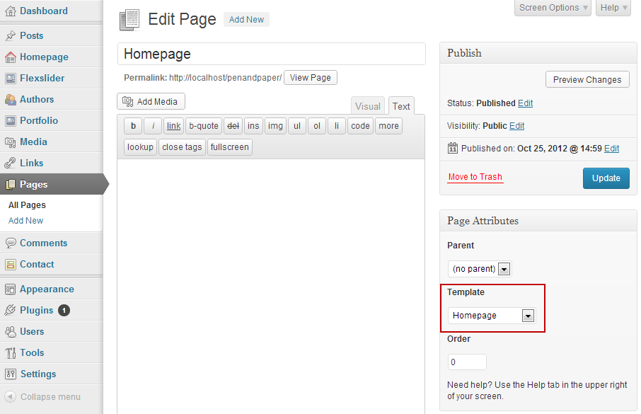
- Homepage needs to be set as 'Front page' and Blog page needsto be set as 'Posts page' inside 'Settings>Reading' as shown on the image.
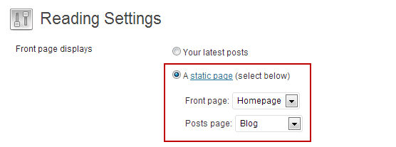
C) Adding posts to Blog - top
Adding new posts to your Blog is done inside the Posts section of your dashboard. Every new post added will appear inside your blog page.
When adding a post, you have an option to use a featured image with it. To do so, inside 'Featured Image' panel click the 'Set featured image' link. Navigate to your desired image (by uploading it or choosing an image from Media Library).When done, click 'Set feautured image'.
D) Adding sections to your Homepage - top
Basically, a homepage section is a scrolling part of your front page. It is added inside 'Homepage>Add New Section' part of you dashboard, very similar as you would add a new post to your blog.
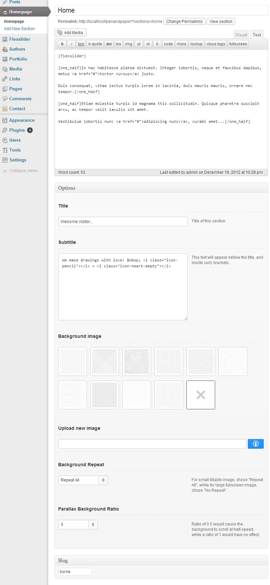
- In the top title field, add a title for your section. This will not be shown on your homepage, however, it will help you to distinguish a section in the 'Homepage' view where all sections are displayed.
- In the textarea field, add the content for your section. To style your content, refer to the 'layout shortcodes' part of this documentation.
- In the bottom title field, add the title of your section that will be shown on the page.
- In the subtitle field, add the subtitle that will be shown bellow the title, inside curly brackets. Please note that you can't use shortcodes inside this field. So, if you wan't to add icons, you will have to add them as html code (read 'K) Shortcodes - Icons' for more info)
- You can select one on the available background presets, or upload your own image.
- If you have a small tillebale image, chose Repead All, for background repeat, while in case of a big, fullscreen image, select 'No Repeat'.
- The value of the 'Parallax Bacgkround Ratio' determents the speed at which the background scrolls. It is relative to the natural scroll speed, so a ratio of 0.5 would cause the background to scroll at half-speed, a ratio of 1 would have no effect, and the ratio of 0 will result in fixed background image. Please note that this will affect only if the parallax effect is enabled inside 'Appearance>Theme Options>Homepage Settings' page.
- In the 'Slug' field (if this panel is not shown, you can turn it on by clicking the 'Screen Options' tab in the top right corner, and then checking a 'Slug' checkbox), enter a word that will serve as a direct link to your homepage section. If you leave it blank, WordPress will automatically generate a word from your section title. For example, if the title is 'About Me', than the slug will be 'about-me' (all small caps and no spaces).
Link to your homepage section has a format of '#slug' . In our case, that means that link to 'About Me' section is going to be '#about-me'. You should copy this link inside the 'Custom URL' field when adding a link to your navigation menu (inside 'Appearance>Menus').
In order to display our sections and pages in the menu, we need to create a new navigation menu (this is alrady done if you've imported the demo content). Go to 'Appearance>Menus', and click a '+' tab to add a menu. Enter a name, and add it as a primary navigation. Basicaly, there are two types of links that you can add to your menu: custom links for homepage sections, and the regular pages.
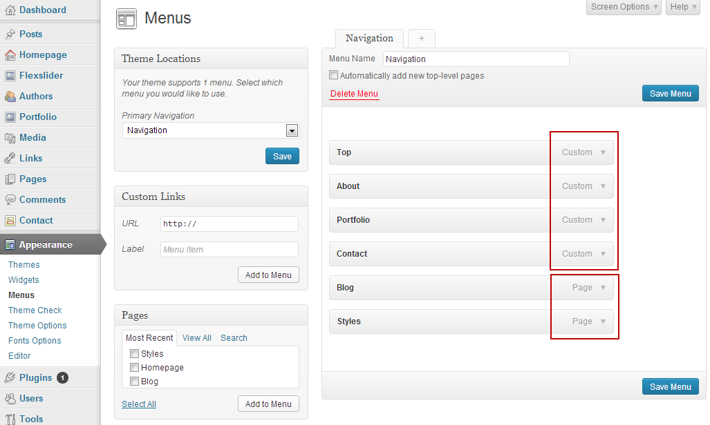
- When adding a homepage section to your menu, use a 'Custom Links' panel. In the URL field, paste or type the custom link address for desired section (you can copy it from 'Homepage' section, under the 'Custom link URL' column). In the label field, type the name that will be displayed in the menu. Then click the "Add to Menu' button to add your new new link.
Keep in mind that your custom links inside the menu should be ordered in the same way as the sections on your page. 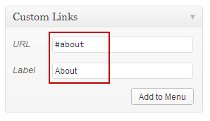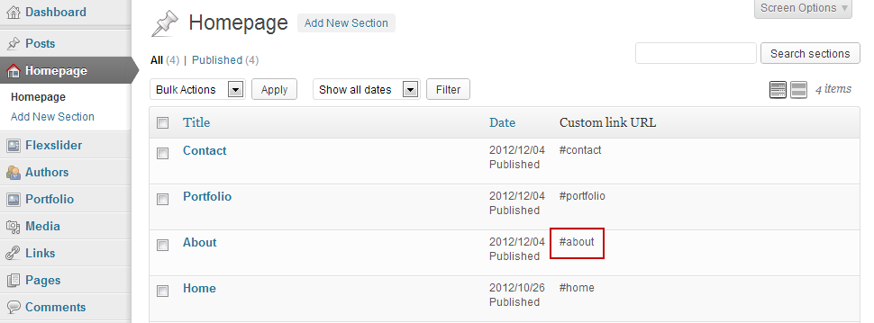
- When adding a page to your menu, use the 'Pages' panel. Simply select the pages you want to add, and click 'Add to Menu'. All pages should be groped together, as well as all custom links for homepage sections.
E) Adding images to Flexslider - top
This theme uses Flexslider, and you can add images inside Flexslider>Add New Slide' sections of your dashboard. Every slide is added as a post, and every image is a featured image of that post.
- Title will be shown only inside your dashboard, and not on published page. Image is added as a featured image. Also, you have an option to add a caption for your image.
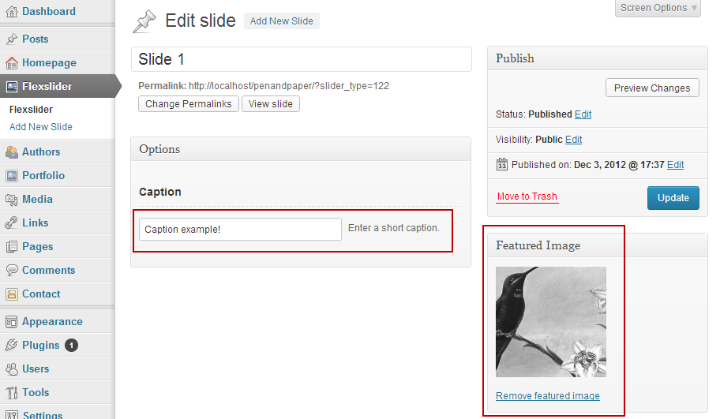
- The Flexslider will be displayed where [flexslider] shortcode is placed (if you have imported the demo content, that will be inside your home section).
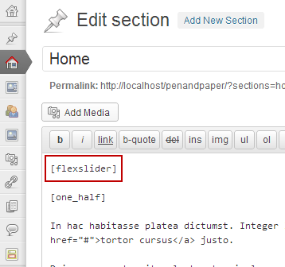
- And the result is:
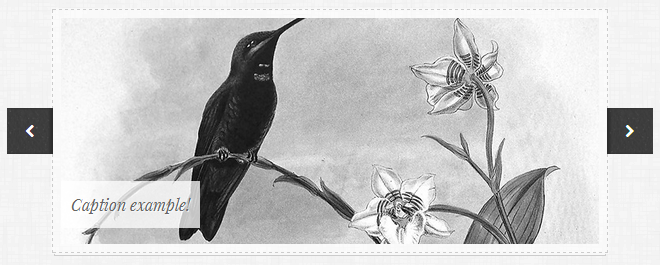
Multiple sliders
When creating or editing a slide, you have an option to assign it to a specific category. By doing so, you can display all slides that belong to a specific category inside a different slider, and therefore create multiple sliders.
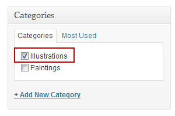
To display all slides inside a single category, use [flexslider category="category name"] shortcode (if you changed the category slug, then use slug instead of the name).
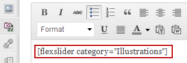
G) Adding authors - top
You can add authors inside 'Authors>Add New Author' sections of your dashboard.
- At the top, type author's name, in the textarea add authors biography/details, throught the feautured image option add an image, and at the bottom you have an option to add a caption to the image.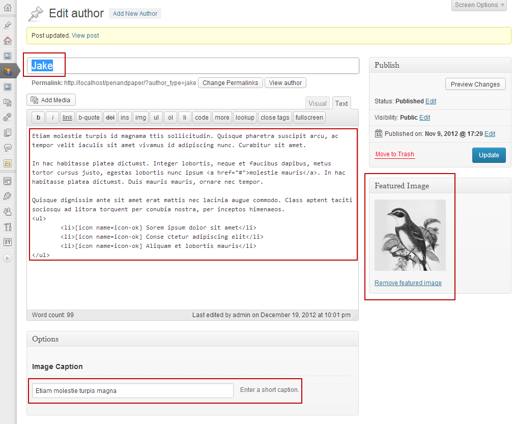
- The Authors list will be displayed where [authors] shortcode is placed (if you have imported the demo content, that will be inside your 'about' section.
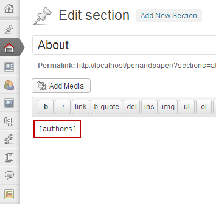
- And the result is the following (if you have only one author, the tabs list at the top will not be shown):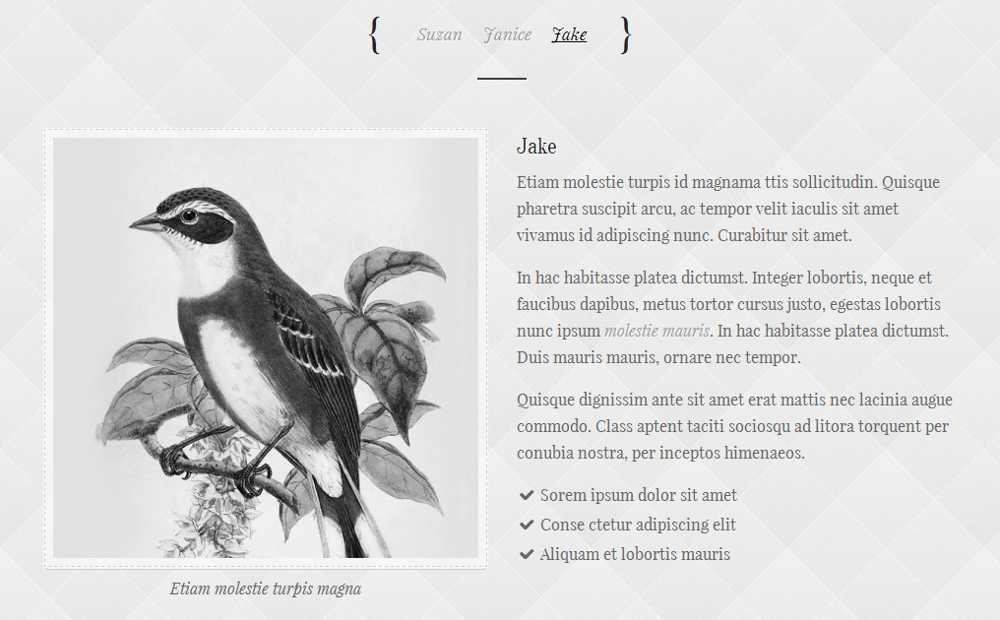
Multiple authors lists
When adding or editing author's details, you have an option to assign it to a specific category. By doing so, you can display all authors that belong to a specific category inside a different list, and therefore create multiple authors lists.
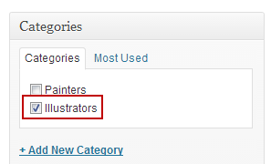
To display all slides inside a single category, use [flexslider category="category name"] shortcode (if you changed the category slug, then use slug instead of the name).
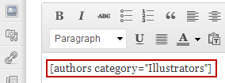
H) Adding items to Portfolio - top
-
As with Flexslider, first we need to find a place where we want to display our portfolio/gallery. We do this by placing [portfolio] shortcode . If you've imported the demo content, that shortcode is placed inside 'Portfolio' section.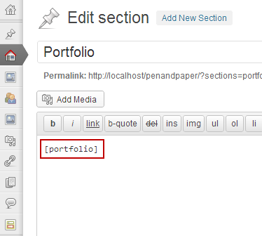
-
Next, we go to 'Portfolio>Add New Item'. There we can enter an item title inside the title field and some short description inside the caption field. Add an image through the 'Featured Image' panel by clicking the 'Set featured image' link. Apply one or more categories for your item inside the 'Category' box if you are going to use category filtering (using Quicksand plugin). If you don't want to filter your items, you don't need to add any category. 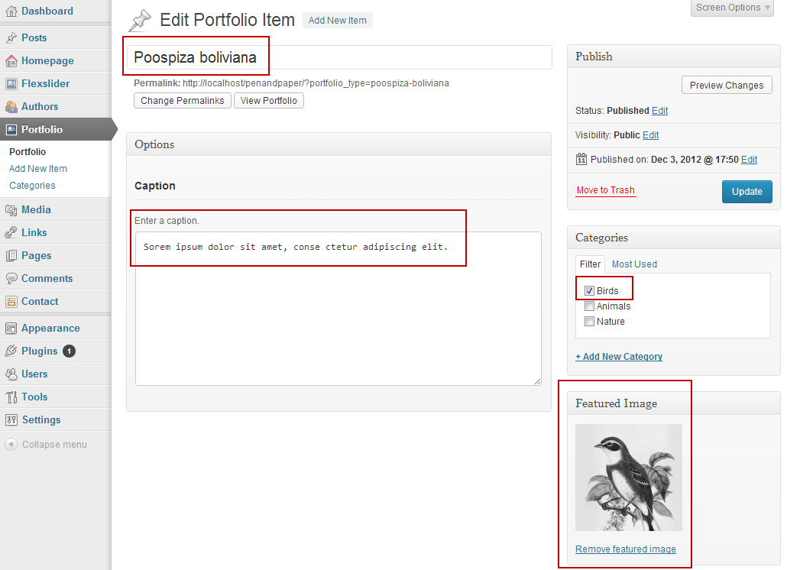
- And the result is: 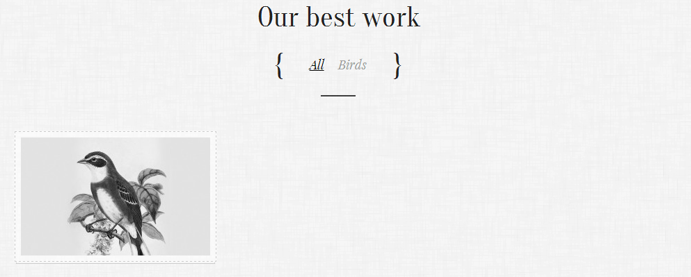
Note: If you don't want to filter your portfolio items, go to 'Appearance>Theme Options>Portfolio' and uncheck 'Enable category filtering inside portfolio'.
This will remove the filter list at the top.
Multiple portfolios
The categories used for Quicksand filtering can be also used for displaying multiple portfolios, i.e. all posts that belong to a single category can be displayed in a different portfolio. The shortcode used for this is [portfolio category="category name"] (if you changed the category slug, then use slug instead of the name).
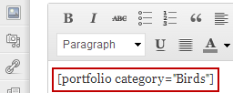
H) Contact form - top
- To set up a contact form, first install a plugin called 'Contact Form 7' (go to 'Plugins>Add New', where you can find it using a search form).
- After installation, a new menu item will appear in your dashboard menu, called 'Contact'. 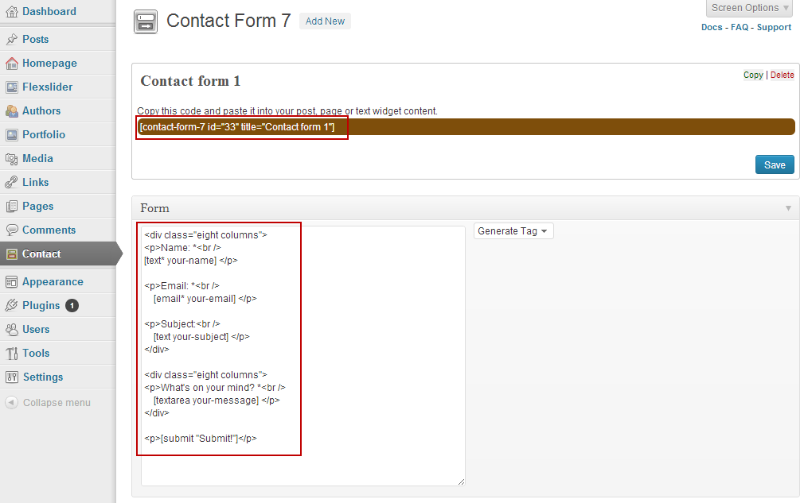
There you can set up the elements you want to appear in your contact form. You can paste this code inside 'Form' area to get a form in two column layout:
<div class="eight columns">
<p>Name: *<br /> [text* your-name] </p>
<p>Email: *<br /> [email* your-email] </p>
<p>Subject:<br /> [text your-subject] </p>
</div>
<div class="eight columns">
<p>What's on your mind? *<br /> [textarea your-message] </p>
</div>
<p>[submit "Submit!"]</p>
- When you are finished, click 'Save' button at the top and copy and paste the code you see on top inside your contact section. (Note: while this code is already imported with the demo content, you need to generate your own code and replace the one that is already there.)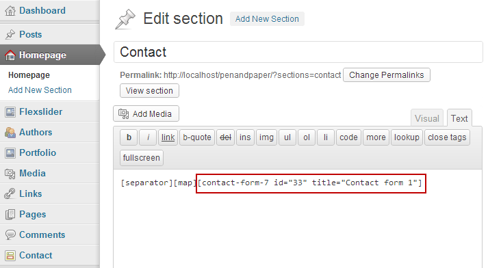
- The final result is: 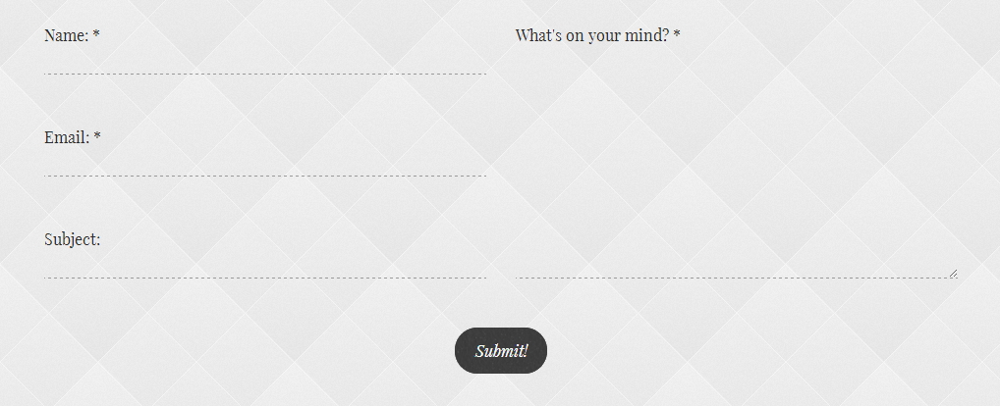
I) Google map - top
If you want to display your location on a map, first you need to set you location inside 'Appearance>Theme Settings>Google map'.
- There you can enter your latitude and longitude, and set the desired zoom level.
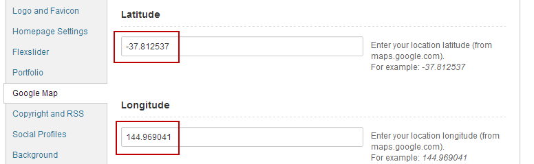You can get the coordinates of a location at Google Maps. Just right-click on the map and select "What's here?". The coordinates will pop up in a box when you click on the green arrow. The first decimal number is a latitude, second one is a longitude.
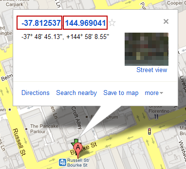
- The map will be displayed where [map] shortcode is placed. However, we still need a link that will load the map once click. Because of that, we place a link with a class of 'google_map' inside the subtitle field (you can place it inside main text area if you want). Full code for the link is <a class="google_map">Google map</a>, and you can replace Google map text for your own.
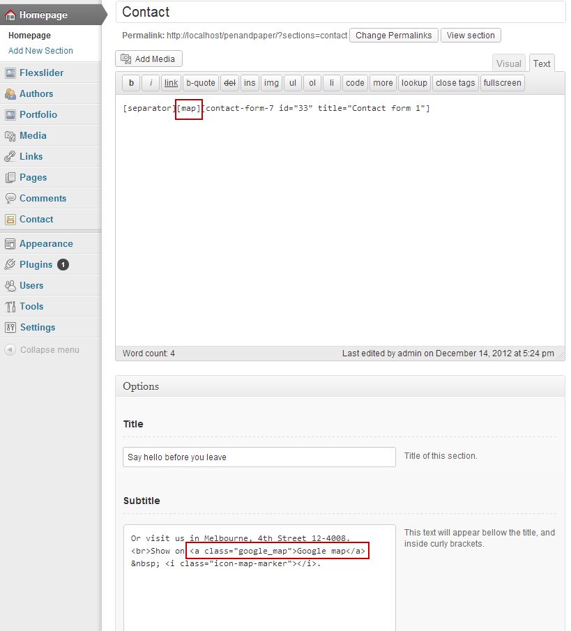
- The result is (once the link is clicked):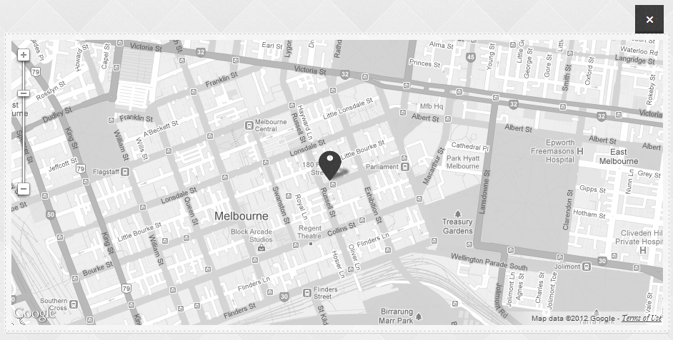
K) Shortcodes - top
This theme comes with a several predefined shortcodes that you can use to speed up your publishing.
L) Installing and Configuring Plugins - top
To use the full potential of this theme, I suggested that you install the following plugins:
M) Theme Settings - top
Theme settings can be found at 'Appearance>Theme Options'. There, you can set your:
- Upload your logo and favicon:
- Enable or disable parallex scrolling effect
- Configure Flexslider
- Toogle Quicksand category filtering inside porfolio
- Configure Google map
- Set social Profiles
- Type copyright information and toogle RSS feed icon
- Set your general background image
- Add custom CSS code
For font selection head to 'Appearance>Fonts Options', where you can chose between 12 fonts for various sections. Please note that in order to use 'Playfair Display Italic' font, you'll need to have 'Playfair Display' font selected as well.
N) PHP files - top
Templates and other PHP files used by this theme:
- 404.php - displays 'page not found' page
- archive.php - displays a list of posts for a specific category or an archive inside the blog
- author.php - displays author's information, website and posts
- authors.php - template for displaying authors sections (in about section)
- comments.php - handles the comments
- flexslider.php - template for displaying Flexslider
- footer.php - site's footer
- functions.php - all functions used in this theme
- header.php - theme's header
- homepage.php - template for displaying homepage sections
- index.php - template for blog page
- metadata-blog.php - template for displaying blog's title, date of post, author, category and featured image
- page.php - page template
- paged-nav.php - numbered navigation for blog pages
- portfolio.php - template for displaying portfolio items
- search.php - handles search results for the blog
- searchform.php - search form for the blog
- sidebar.php - right sidebar for the blog
- single.php - single blog post
- single-author-typer.php - template used for preview when adding authors
- single-portfolio_type.php - template used for preview when adding items to portfolio
- single-sections.php - template used for preview when adding homepage sections
- single-slider_type.php - template used for preview when adding items to Flexslider
- /lib/blog-comments.php - comments functions for blog
- /lib/fonts.php - fonts list available at 'Appearance>Font Options' page.
- /lib/localisation.php - localisation code
- /lib/meta-boxes.php - all metaboxes used in this theme
- /lib/post-types.php - all post types used in this theme (for homepage sections, flexslider, authors and portfolio)
- /lib/shortcodes.php - contains all shortcodes that can be used with this theme
- /lib/theme-options.php - contains all options that are displayed in 'Appearance>Theme Options'. This are options for OptionTree plugin.
- /lib/theme-options-filters.php - Some filters for Theme Options page and metaboxes (display custom images for background options)
- /lib/TinyMCE.php - custom buttons displayed inside WP visual editor
O) CSS Files - top
CSS files used by this theme:
- style.css - main style sheet
- lib/css/font-awesome.min.css - style steet for Font Awesome icons font
- lib/css/skeleton.css - style steet for Skeleton responsive boilerplate
P) JavaScript - top
This theme imports folowing Javascript files:
- lib/js/custom.js - custom scripts (moblile navigation button, tabs, tooltips)
- lib/js/custom_homepage.js - custom script for homepage (waypoint plugin scrolling code)
- lib/js/jquery.easing.1.3.js - jQuery plugin from for advanced easing options
- lib/js/jquery.flexslider-min.js - Flexslider plugin
- lib/js/flexslider_script.js - Flexslider plugin script
- lib/js/jquery.galleriffic.js - Galleriffic plugin (for displaying images inside portfolio)
- lib/js/jquery.quicksand.js - plugin for reordering and filtering items with a shuffling animation (for filtering images inside portfolio)
- lib/js/jquery.stellar.min.js - Stellar.js plugin for parallax effect
- lib/js/jquery.tools.min.js - jQuery Tools plugin (only tooltip and tabs included).
- lib/js/map_script.js - script for Google map
- lib/js/portfolio_script.js - script for portfolio section
- lib/js/tinymce.js - scripts for custom buttons inside WP visual editor
- lib/js/waypoints.min.js - Waypoints plugin (a small jQuery plugin that makes it easy to execute a function whenever you scroll to an element)
Q) PSD - top
Photoshop mockup is located inside PSD folder
- mockup.psd - main photoshop file
R) Fonts - top
This theme uses several Google fonts (available at 'Appearance>Fonts Options'), as well as Font Awesome icons font.
S) Localizing theme - top
This theme is localization ready (for left to right languages). Inside lang folder is located default.po file, which you can use to translate this theme into your language.
- Open default.po file with a program like Poedit
- Translate desired text into your language
- If you are translating into, for example, German language, save this file as de_DE.po (you will need to type your language code instead of de_DE) into the same folder. If you are using Poedit, the corresponding mo file will be automatically created (check if the 'Automatically compile .mo file on save' is enabled in File>Preferences>Editor') when saving. The end result is to have de_DE.mo file inside lang folder.
- Last thing to do is to open 'wp-config.php' inside your root WordPress folder and define your language on this line (in this case, we defined German language):
define('WPLANG', 'de_DE')
Please note that beside localized theme, you should also have localized WordPress instalation, in order to have translated everything that is displayed (like the comments section).
T) Sources and Credits - top
Once again, thank you so much for purchasing this theme. As I said at the beginning, I'd be glad to help you if you have any questions relating to this theme. No guarantees, but I'll do my best to assist. If you have a more general question relating to the themes on ThemeForest, you might consider visiting the forums and asking your question in the "Item Discussion" section.
dabaman
Go To Table of Contents